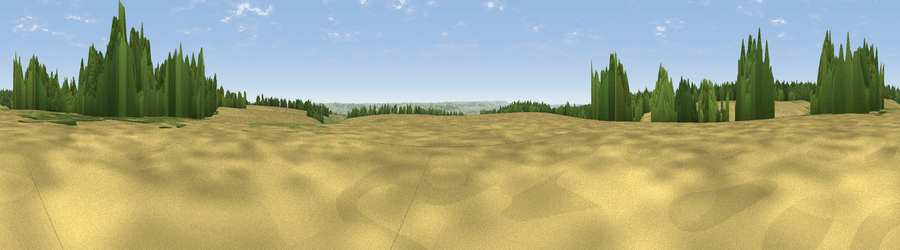

Viewpoint near Ebberston
#26272 in England · top 55% of its area beats it · near EbberstonThe view, rendered

A 360° render of this exact spot computed from the terrain model, tree cover and land cover — summer colours, afternoon light, calibrated against photographs of famous viewpoints. Real trees, hedges and buildings will differ in detail.
The panorama
Grey silhouette: terrain skyline in each direction (720 bearings, Earth curvature and refraction included). Dashed green: skyline with trees (+15 m) and buildings (+8 m) as obstacles. Blue strip: how far the ground is visible on each bearing.
Where the view opens
Wedge length = distance to the farthest visible ground on that bearing (vegetation-aware). Rings at 10, 25 and 50 km.
What fills the view
52% cropland · 32% woodland · 15% grassland ·
Angular shares of the visible panorama (visual magnitude), not map area. Landscape diversity 0.45 (0–1 Shannon).
Key numbers
More beautiful places nearby
The staircase of upgrades: each row has a higher view potential than everything closer. Driving times are estimates from straight-line distance, calibrated against real road routing — check an actual route before setting out.
| Place | Direction | Drive | Score |
|---|---|---|---|
| Viewpoint near Sawdon | E · 2 km | ~6 min | 50.2 |
| Viewpoint near Allerston | SSW · 4 km | ~8 min | 59.5 |
| Viewpoint near Ebberston | S · 4 km | ~9 min | 60.1 |
| Viewpoint near Allerston | SW · 4 km | ~10 min | 61.8 |
| Whinny Nab | NNW · 8 km | ~17 min | 64.9 |
| Langdale Rigg End | NNE · 8 km | ~17 min | 65.1 |
| Viewpoint near Scalby | ENE · 10 km | ~20 min | 73.4 |
| Viewpoint near Burniston | ENE · 11 km | ~20 min | 74.3 |
54.27104, -0.62603 · source: screening · position refined by local search. Computed location — check access rights before visiting.